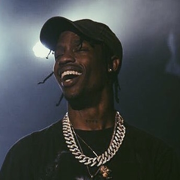
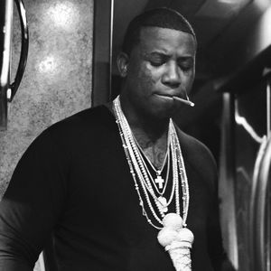
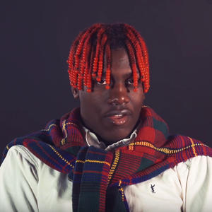

Trap is a subgenre of hip-hop derived from Southern Hip-Hop in the 90's. The term "Trap" is defined as somewhere where drug deals take place. Most of this music comes from Atlanta or Houston, while other southern cities have a large trap music following as well. Trap is characterized by its use of drum machines, hi-hats, and synths. Below are some artists that fit into the trap genre.
Travis Scott

Jacques Webster AKA Travis Scott is a rapper from Missouri City, Texas. He is known for being both a rapper and producer. Many of his songs are self produced. He's well known for his heavy use of autotune and his dark, seductive song style. He's gained a lot of radio success in his short music career. He's collaborated with an array of different artists, from Justin Bieber to Drake to The Weeknd.
Gucci Mane

Radric Davis AKA Gucci Mane is a rapper from Atlanta, Georgia. His music is no different than many of the other trap artists, but he has been a major influence on current trap artists. Artists like Young Thug and Rae Sremmurd have said that he was a big influence on their music. He has mainly had his success in southern urban areas. He has almost become a cult figure in southern hip-hop since starting his career in the mid 2000's.
Lil Yachty

Miles McCollum AKA Lil Yachty is a rapper from Atlanta, Georgia. Even though Lil Yachty is only 19 years old, he has had a lot of success in the past two years. His debut mixtape Lil Boat, has gained varying amounts of praise and criticism. His unique deep voice and light, upbeat music style is praised by some and completely rejected by others. His odd music combined with his unique appearance has made him a sort of meme on the Internet and within the music community.